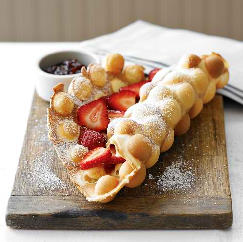
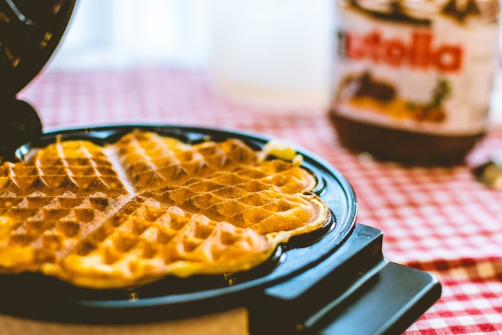
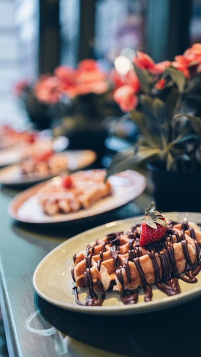

Welcome to Waffull
  Our Waffull World
At Waffull we serve all kinds of waffles from all over the world. From Hong Kong to Brussels, people each have their own twist on waffles and we are here to celebrate them all!
Tour the world each day as you choosen between our standard Waffulls or try one of our seasonal favorites. We'll make your Waffull hot for you and serve you at your cafe table, just like a night market in Hong Kong or a parisien cafe.